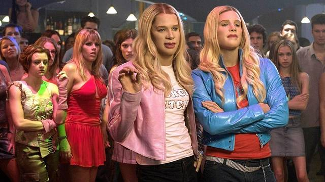

El trabajo de los ambiciosos pero desafortunados agentes del FBI Marcus y Kevin Copeland pende de un hilo. Cuando se descubre un complot para secuestrar a dos caprichosas hermanas de sociedad, sus rivales se quedan con el gran caso, y a Kevin y Marcus les asignan la insignificante tarea de acompañar a las jóvenes malcriadas desde el aeropuerto hasta su hotel en los Hamptons.
Esta película marcó un precedente, se los aseguro. Y me da asco pensar que "Los Grandes Directores" han esquivado el tema con saña y pereza intelectual. ¡Larga vida a los Wayans dejando un sello en la historia cinematográfica! ¡Abucheos y silbidos a la Academia por ignorarla cruelmente!